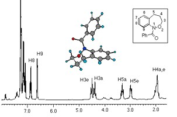
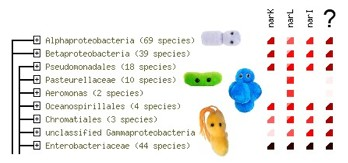
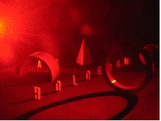
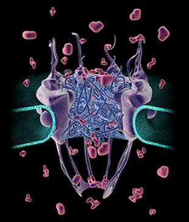

Artificial life is a field of computer science which uses computers to create various models of natural processes. The goals are twofold – to gain better insight into how nature works, as well as aim at possibly creating life itself in the computer environment. During the course of the project, we will have a look at some of the projects from the past, namely CoreWar, Tierra and Avida. All three of these are artificial life models, where computer programs written in specially designed languages compete in a simulated environment for memory and CPU time. To achieve that, they replicate, self-mutate, evolve, and fight for survival. CoreWar will be our playground for the rest of the project. We will take a look at several topics. The focus will be on evolution-inspired methods, such as genetic programming and genetic algorithms in general. We will cover the basics of artificial intelligence (AI) and see how it’s possible to create some intelligent systems. In the remaining time, we’ll take a peek at some basics of mathematical modeling, as well as cellular automata.
In the practical part, the students will use the CoreWar model to test and apply the knowledge obtained through the lectures. We will use the genetic programming approach to create new populations of CoreWar programs and analyze their properties. Students will learn about the various survival strategies employed by these artificial life forms and will be able to correlate it to the life as we know it.
Nenad Tomasev
Jozef Stefan Institute, Ljubljana, Slovenia
Nenad is a PhD student at the Jozef Stefan International Postgraduate School in Ljubljana, as well as an undergraduate mathematics student at the University of Novi Sad. His research interests lie in the fields of data mining and knowledge discovery, artificial intelligence, stochastic optimization, mathematical modeling and dynamical systems. His hobbies are chess and hiking.
The From its invention in 1946, nuclear magnetic resonance (NMR) has remained one of the most important experimental techniques in physics, chemistry, biochemistry and medicine. NMR enables precise determination of the chemical structure (even with large biomolecules) and chemical compound identification, making it an indispensable tool for chemists and biochemists. It is also very important for physical studies of atomic dynamics and environments in crystals and glasses, where it is referred to as 'physical' NMR. The most recent use of the resonance technique is in medicine, through Magnetic Resonance Imaging where the effect of NMR on hydrogen nuclei is used to map the water content in the human body. MRI provides very detailed three-dimensional images of the body and has become one of the principal diagnostic tools in modern medicine.
The aim of this project is to construct a fully operational NMR spectrometer for hydrogen (protons) and use it for one physical and one chemical experiment. For that we will need the basics of NMR theory (involving a bit of quantum mechanics), some high-frequency electronics and basic computer programming. Some aspects of solid state physics and physical chemistry will also be covered during the two experiments we will perform with our NMR spectrometer. The physical experiment will be to investigate the ferroelectric phase transition of triglycine sulfate which is due to hydrogen atoms in the crystal structure, while in the chemical experiment we will try to identify an unknown compound based on the NMR spectrum it produces.
Damjan Pelc
University of Zagreb, Croatia
Damjan is a fourth year student of physics at the University of Zagreb. His main interests are in experimental solid state physics, especially disordered systems and phase transitions. This is his third year as mentor at the Summer School of Science. When not doing physics, he likes music of (almost) all kinds and occasional table tennis.
In the last few years, genome sequencing has become affordable and reliable, resulting in the completion of the famous Human Genome project, but also in the genome sequences of over a 1000 different bacteria. Some of them are dangerous to humans, some can withstand radiation and miraculously survive in a nuclear reactor, while some happily live and grow in near-boiling or near-freezing water, or in the highly saline Dead Sea. How bacteria manage to accomplish all of this is largely still unknown. Even more, we have no idea what around 30% of their genes do. This group will use a bioinformatics method called 'pyhletic profiling' to guess the function of several of these genes, and then verify it by experiments in a microbiology lab.
In this project, students will learn how bioinformatics can help us discover functions for previously poorly characterized genes. They will learn how to write a computer program that 'aligns' gene or protein sequences, in order to see if two sequences are similar or not. To do this, we will use the programming language Python. The program will then be applied to find 'homologs' (similar sequences) of E. coli genes in other species. These results will be processed by a machine learning method that we will use to find new genes for antibiotic resistance. Finally, we will test our predictions in the lab by growing E. coli mutants lacking a single gene in the presence of antibiotics. If the gene adds to antibiotic resistance, the mutant without the gene will be more sensitive to antibiotics.
Fran Supek
Rudjer Boskovic Institute, Zagreb, Croatia
Fran is currently a PhD student at the Laboratory for information systems, Rudjer Boskovic Institute in Zagreb. His research interests include applying new machine learning techniques to various biological problems, such as genomics, protein sequence analysis and anticancer drug design. Fran was a project leader on S3++ 2007, and one of the organisers of S3++ 2009.
Jelena Repar
Rudjer Boskovic Institute, Zagreb, Croatia
Jelena is a doctoral student at the Laboratory for Molecular Microbiology at the Rudjer Boskovic Institute, Zagreb. She works in the field of DNA recombination and repair in the radiation resistant bacterium Deinococcus radiodurans, sometimes nicknamed 'Conan the Bacterium'. She fist came to the Summer School of Science as a lecturer in 2009.
In their struggle to understand light’s inner workings scientists have been led to new insights and new technologies. One particularly surprising property of light is that a more or less normal photographic film can be used to store and retrieve seemingly three dimensional images of an object – a process known as holography. Not only does this allow fascinating holographic images to be created (that help make our credit cards look pretty), but the technique of holography has numerous other applications. From visualising stresses and strains in materials, to designing new generations of super-storage devices that could transform how we store information, holography really does offer more than meets the eye. But how is all this possible? The basic idea behind a hologram is to mix laser light that has scattered from an object (thus containing information about it) with un-scattered ‘reference’ laser light. This mixture is then recorded by a photographic film, which - upon being developed and re-illuminated - magically recreates the captured scene.
In this project, students will cover both theoretical and experimental aspects of holography. The project will begin with students using calculations and computer simulations to understand the properties of laser light and linear optics (the manipulation of light with devices like lenses and mirrors). This will reveal how the intriguing properties of interference and diffraction can be utilised to store three dimensional information about objects. Students will then use this understanding to construct an experimental setup allowing them to produce their own simple holographic images.
Nicholas Harrigan
Imperial College London, UK
Nicholas works in the Physics Department at Imperial College London. He completed a PhD in quantum computation, understanding how the strange properties of tiny atoms can be used to build ultra-powerful computers. He also has a strong interest in science education and has previously spent a year teaching high school students. In his spare time Nicholas likes to play super mario bros.
Understanding the life process at the molecular level requires intimate knowledge of how the components within a living cell interact: how they come together and fall apart; and when and where they do that within the cell. Fortunately, biologists have many tools at their disposal for capturing information about biomolecular interactions. We will focus our attention on studying a protein component of the nuclear pore complex (NPC) in yeast, and we will use a few core analytical methods to decipher the molecular interactions our protein of interest forms within nuclear pores. NPCs are essential to the life of a eukaryotic organism, they regulate how molecules pass between the nuclear and cytoplasmic compartments within cells. Hence, they can be thought of as an efficient molecular traffic queuing system for the cell or as a complex sorting machine that lets the right molecule pass to the right cellular compartment at the right time. Naturally, failures or defects in this process, as in any essential cellular machinery, can easily lead to disease.
During our study we will examine which other protein molecules co-purify with our protein of interest within different experimental contexts, and this should help us to determine some principles of organization and molecular interactions within the NPC and/or the cell at large. Based on the data we obtain, we will formulate a hypothesis on how these interactions are put together. This will illustrate how discovery facilitates hypothesis, and we will consider what additional experiments would be useful to further prove our hypothesis.
John LaCava
Rockefeller University, New York, USA
John is a postdoctoral researcher in the Laboratory for Cellular and Structural Biology at The Rockefeller University, New York City, USA. He obtained his Ph.D. in molecular genetics at Edinburgh University, Scotland. His current research primarily includes molecular biology, biochemistry, and proteomics, and exploring how diverse data can be used for producing structural models of dynamic biomolecular systems. John holds great interest in student mentorship and educational outreach, and he supports several programs to provide opportunities for students to obtain advanced hands-on laboratory research experience. Moreover, John is pioneering ways to bring research science into the popular culture through art and music: www.soundsofscience.net
The main goal of the Multidisciplinary Scientific Temptation (MST) is to solve one scientific problem using a multidisciplinary approach. MST is a workshop which consists of a short introduction part, practical group work and a final discussion. For practical purposes, the topic of the MST will remain a secret until the introduction. Students will be placed into one of three teams: computer science, biology or chemistry team. After 4 hours of practical work, each team will present their findings to the others at the discussion meeting. Final answer to the scientific problem will be given using data from all three teams.
Workshop leaders: Nino Antulov-Fantulin, Marko Kosicek, Anamarija Stafa
This year United States were faced with the largest offshore oil spill in its history, as the drilling rig "Deepwater Horizon" exploded in the Gulf of Mexico in April. Since then, we are witnessing an environmental catastrophe of epic proportions, an oil spill threatening diverse animal species and their habitats. Moreover, the spill has threatened the economy of the US southern states, most notably the fishing industry and tourism. Who will be held responsible? The shares of BP have plunged when it became certain that it will have to pay a huge bill, sending ripples through the global economy. For example, pension funds in UK own a large number of BP stocks and with it are responsible for the economical well-being of pensioners in UK.
The catastrophe has showed how much our environment and economy are intertwined with each other. It has exposed the role of the regulator and raised awareness among citizens about possible consequences on relying too much on oil for our energy needs. In this workshop, we will simulate a decision-making process by examining a project of Druzba-Adria, a pipeline carrying oil from Russia to Croatian coast. We will examine the issue from several viewpoints, those of citizens, environmentalists, politicians and oil industry.
Workshop leader: Branimir Lukic
Alan Ivkovic (University hospital center, Zagreb, Croatia): From Stem Cells to Engineered Tissues: Facing the Challenge
Fran Supek (Rudjer Boskovic Institute, Zagreb, Croatia): Presentation of scientific results
Andjela Saric (Columbia University, New York): Self-assembly on soft surfaces: getting organized
Korado Korlevic (Visnjan Observatory): The Tunguska Explosion ... no more a mistery after 102 years